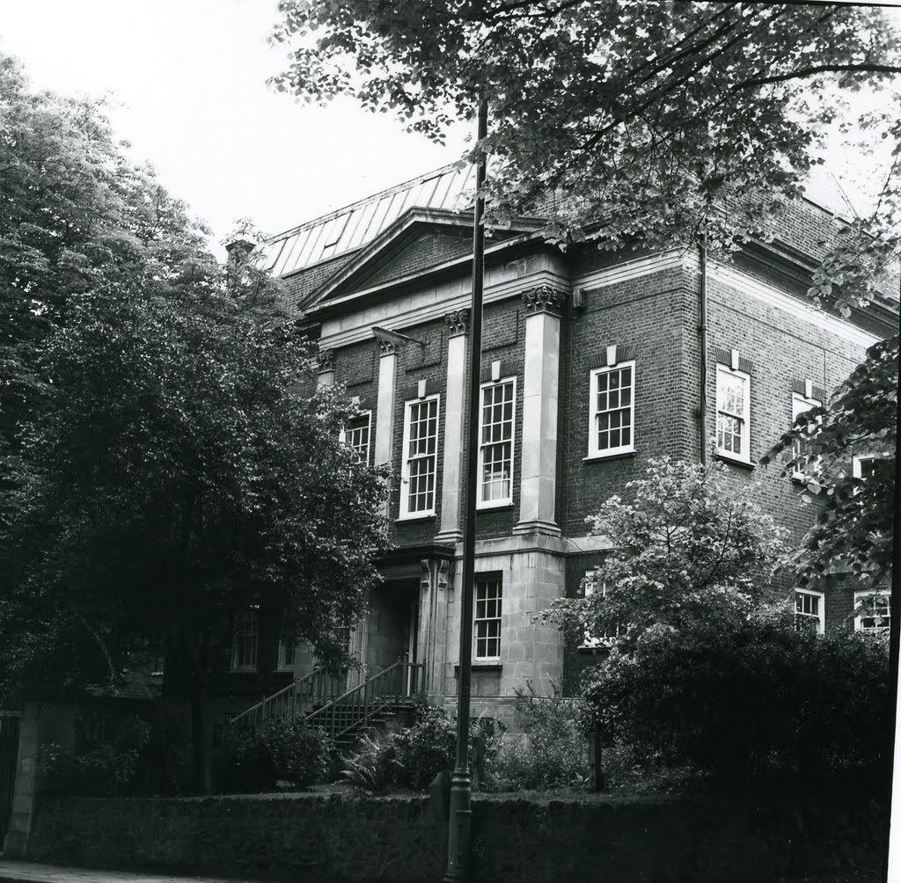
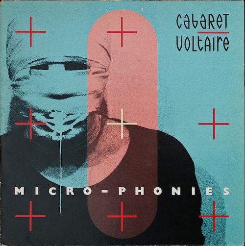
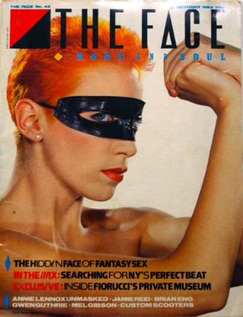
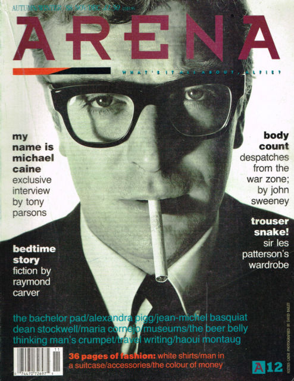
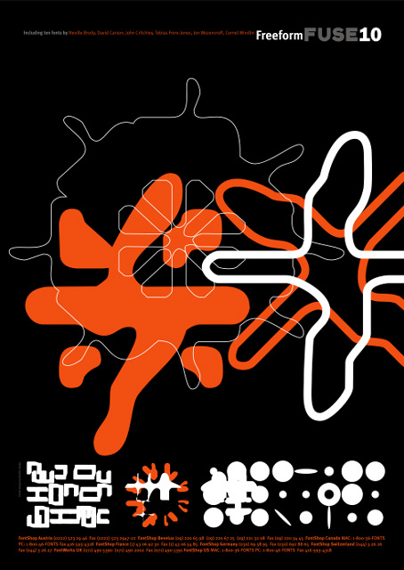

Background
Born and raised between city and rural areas, in Southgate, North London. Neville Brody always had a big interest in art. He studied A-level Art at Michenden Grammar and especially had an interest in Fine Art. After his A-Levels Brody decided to attend Hornsey College of Art studying Fine Art at Foundation Level (1975).
Within his experience at Hornsey, Brody had mixed views on Fine Art mentally, stating that Hornsey was good at producing “Safe Students”. They (Hornsey) had learned the rebellious movement and this resulted in Brody feeling that human communication had been completely lost. Brody’s method was to learn the process then completely flipping it on its head, creating a more balearic outcome.
Fine Arts to Graphics
He then had a crucial decision to make, stick with fine arts or change to graphics. In Brody’s opinion, he felt that Fine Arts was too specialist and that the market was niche. He thought that graphics provided more possibilities. He wanted to show the world his work rather than hide it and felt that his time at Hornsey had been an 'eye opener' for him.
Brody then enrolled to London College of Printing to study a BA in Graphics (1976). He questioned the method quoting, “why can’t you take a painterly approach within a printed medium?” Brody narrowly avoided expulsion from his course as he decided to turn the Queen's head sidewards on a postage stamp design. His work was always very experimental in comparison to the view of his tutors and even stated ,“If tutors said they liked something I was doing, I would go away and change it” as he thought it was too commercial. He then graduated in 1980 and when reflecting on his time he quoted, “I hated my time at LCP, but I valued it”.
The Pop-art and Punk Era
During Brody’s time at LCP the era of Punk music had begun. It was clear that Brody took inspiration from the Punk revolution as it related clearly in his rebellious work. After university Brody developed many creations mainly taking inspiration from Pop art and Dadaism. As Brody was living in London due to previously ttending LCP, he was inspired by the transition of London. He stated that, “You’re right in the centre of this collapsing, decaying space, post what London used to be and just prior to it rebuild as this shopping-mall experience”.
He worked with two main record labels known as Fetish and Hannibal. Punk music was taking over Britain at this time, Brody and Punk connected perfectly with both rebelling against commercialism and conformity. Album artwork was incredibly important to Punk music, in fact some record companies considered the artwork to be more important than the actual music. Brody's work was right up there leading the punk revolution with the likes of the Sex Pistols and the Clash.
Although many of the people in which Brody designed album work for were short lived, Brody himself became increasingly recognised. During his time at Fetish records, Brody was made Art Director of the label. Throughout this time Brody implimented a new visual language for his work. It consisted of the traditional visual way with the incorporation of architectural elements. He frequently worked with Cabaret Voltaire and 23 Skiddo, most recognised for Cabaret Voltaire’s Micro-phonies album in which showed a bandaged man’s face spewing vomit.
Magazines
After creating this new visual language, Brody decided it was time to impliment it in a different format swapping album artwork for magazines. In 1981 Brody started working for the magazine “The Face”. He tried to re-create the way the reader looked at the layout, questioning the traditional commercial way. His aim was to get the reader to look twice at what they had just seen. In order to achieve this aim with his imagery, Brody had to go more commercial compared to that of the Punk era.
At “The Face” Magazines “City Limits” and “New Socialist” frequently collaborated with Brody to achieve a similar aim. Brody was one of the core designers of the magazine having a huge say in how the magazine looked and the direction in which it was going. From 1981-1986 Brody was the leading typographer, graphic designer and Director of Art at “The Face”.
In 1987 Brody started working for “Arena” magazine, creating mainly minimalist style work. This was a complete U-turn of the work that he had been doing previously at “The Face”. Brody thought that his work had been completely ripped off and felt that the U-turn of not making bold new work was needed. Instead he used simple fonts rather than the exotic style previously.
During his time at "Arena" Brody also became familiar with Macintosh. He believed that he could use computer aided design to his advantage and produce work that was not possible any other way. He believed that CAD opened up a whole new world of possibilities. He is still a strong believer of hand created work especially hand drawn type as it took skill to create a hand drawn font rather than using a loaded font on computer. Brody then went back to his exotic styles eventually but incorporated the use of CAD as he believed the future and possibilities of creation lay within it.
After ending his time at “Arena” in 1990, Brody teamed up with Jon Wozencroft. Creating an experimental magazine known as “FUSE”. "FUSE" was an interactive magazine that looked at the expansion and future of digital typography. This magazine was very different to that which Brody had created previously. The magazine was split by both had copy and disk containing a variety of articles, fonts and posters. The aim of "FUSE" was to attract new users to the newly fast-growing world of type design.
Typography
Throughout his whole career Brody has been renowned for his work in typography. When learning about type he questioned the origins of typography and when it began, for example; Roman/Greek alphabet, Egyptian Hieroglyphics or prehistoric cave drawings.
Brody respected that there were rules that needed to be followed when creating type. He always followed the basics of these rules followed by a process of questioning every decision after that until he was satisfied. Throughout his whole magazine career, he always questioned the structure of typography. When working for “The Face” he said that he wasn’t solving the problems but rather finding the questions. Brody normally pushed the boundaries of type on a weekly basis seeing how close he could merge typography and graphics without overstepping the line. As digital type was on the uprise more people had access to the tools required to develop new fonts or amend traditional style.
Clients abroad were more supportive of Brody’s work rather than the ones within the UK, this was due to them being more open about the concept of the computer. In 1987 Brody opened up a studio in London. This allowed him to work in one location and send templates and work to all clientele around the world.
In 1988 Nike approached Brody with a series of ideas. They gave Brody phrases in which he combined using a specific typographic structure which was something he had been doing at “Arena” magazine. These concepts were then used for t-shirts, magazine advertisements and even logos for Nike. Nike wanted to direct these designs towards a young age group and after the success of the work stated above, Nike commissioned Brody to design baseball caps, merchandise, towels and more t-shirts.
In 1990, Brody also launched “Fontshop International” with Stuart Jenson. “Fontshop” now renamed “Fontbook” is a typography website with over 9000 sets of type in which are created and released for everyday use. One of Brody’s first creations involved the use of the lowercase letter “a” in which he printed and rescanned the image to create a distorted version. This was great practice of Brody’s merging of typography and graphics without overstepping boundaries.
Latest Ventures
Brody has continued to embrace the digital takeover, creating brody-associates.com. They specialise in digital, printed, typography, identity (branding) and collaborations. His corporation have worked with and still collaborate with many small and big-name brands.
In 2015 Channel 4 approached brody-associates to help revamp and create a new look. Horseferry (display font) and Chadwick (information font) were exclusive typefaces designed for Channel 4’s new look. These typefaces were named after Horseferry Road and Chadwick Street found in London. The aim was to create a new fresh typography but still have the puzzle like style that Channel 4 has been renowned for throughout the years in their advertising, branding and credits.
Still to this day people recognise Brody for his exotic bold pieces from the Punk era and in 2015 he designed the branding for Punk. London. Brody took elements from his work in the Punk era and updated them to fit a modern-day era of Punk.
Nike still continue their successful typographic work with Brody and in 2014 Brody’s well known work in typography landed him England’s national football team’s lettering and numbering for their home and away kits. This was worn by the England team during their World Cup Campaign in Brazil with the typeface being known as Cade Brody. Brody stated that “the core inspiration was to focus on the intersection between flair and workmanlike reliability”. The end resulted in a typeface that was dark blue and rounded featuring diagonal pinstripes to create texture within the typeface.
Brody’s career has made him one of the world’s most recognised designers of his generation. His exotic, 'think outside the box' designs have made him a pioneer of modern typography and graphic design and is often known as a “star typographer”.